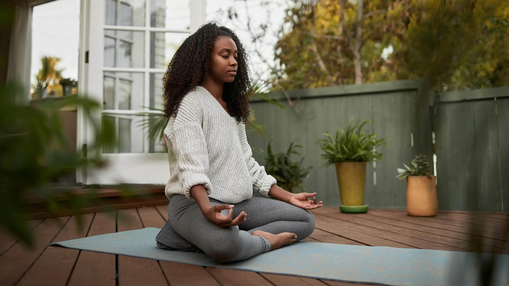
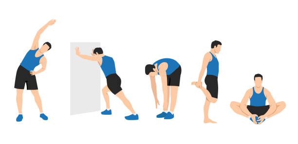

No necesitas horas en el gimnasio para mejorar tu salud. Estas rutinas de 10 minutos, validadas por expertos, pueden integrarse fácilmente en tu día a día.
✨ Beneficios comprobados
- Mejora la circulación sanguínea
- Reduce el estrés y ansiedad
- Aumenta los niveles de energía
- Fortalece el sistema inmunológico
- Mejora la calidad del sueño
- Incrementa la productividad
1. Meditación matutina

Comienza el día con claridad mental
Cómo hacerlo:
- Siéntate cómodamente con la espalda recta
- Cierra los ojos y respira profundamente
- Concéntrate en tu respiración (5 minutos)
- Visualiza tu día ideal (3 minutos)
- Agradece por algo específico (2 minutos)
2. Activación corporal

Despierta tu cuerpo sin esfuerzo
Secuencia recomendada:
- Estiramiento de cuello (1 minuto)
- Rotación de hombros (1 minuto)
- Estiramiento de espalda (2 minutos)
- Flexiones de piernas (2 minutos)
- Respiración profunda (4 minutos)
3. Relajación nocturna
Prepara tu cuerpo para un sueño reparador
Técnica 4-7-8:
- Inhala profundamente por 4 segundos
- Mantén la respiración por 7 segundos
- Exhala completamente por 8 segundos
- Repite durante 10 minutos
Esta técnica reduce el ritmo cardíaco y prepara el cuerpo para dormir.
Consejo del experto
"La consistencia es clave. Realizar estas rutinas diariamente, aunque sea por poco tiempo, tiene mayores beneficios que sesiones largas pero esporádicas."